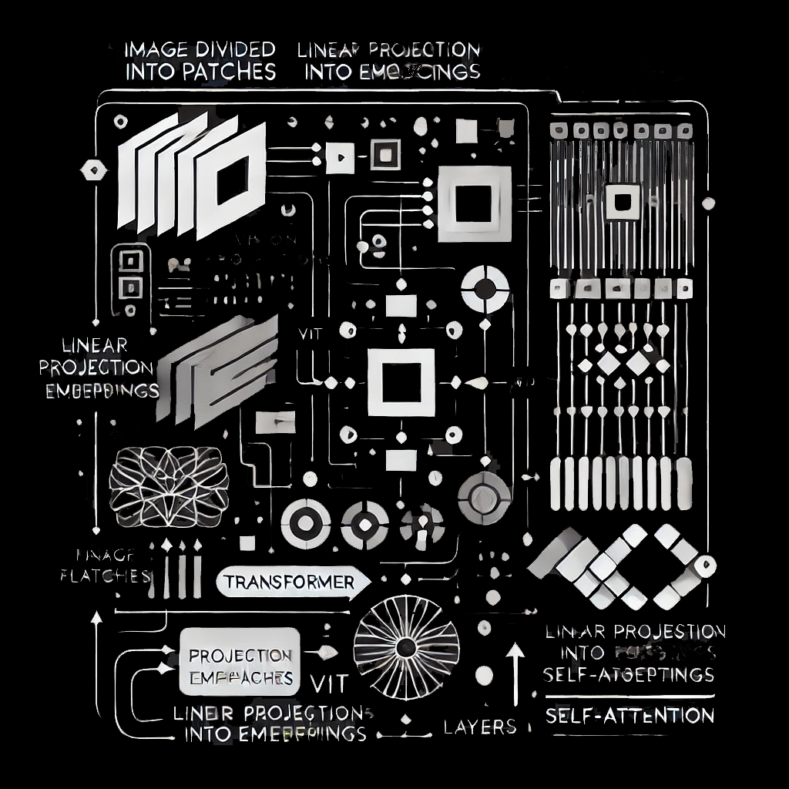

What's going on here?! 🎯
Upload a picture of your dartboard, and the app will automatically detect and
track dart positions using advanced image processing with OpenCV, YOLO and clustering methods.
If you click on the TEST button, a random image from the test library will be uploaded.
May be little slow, due to low-end the CPU on the server and iterative clustering,
but soon it will become much faster.
You can check the full app on my Github.
Additional feautures like automatic Airdrop for Apple users, game logic and other functionalities are there.
Scroll down for more details!


Hold on, image is processing
Oops, something went wrong
How does it work?
This app is designed to automate the process of detecting dart hits on a dartboard and accurately calculating the score, overcoming the challenges of perspective distortion and varied angles.
Here’s a breakdown of the core functionality:
1. Initial Dart Detection with YOLO Models
The first step in the process involves detecting the number of darts on the board and their approximate locations:
- Image Patches. Instead of processing each pixel individually, ViT divides the image into fixed-size patches (e.g., 16x16 pixels). Each patch is treated as a token.
- Tokenization. The patches are flattened and treated as input tokens for the transformer.
- Linear Projection. Each patch is linearly projected into a fixed-dimensional embedding space.
- Positional Encoding. Since transformers don’t have a natural sense of the position of tokens (unlike CNNs that process images spatially), ViT adds positional encodings to the patch embeddings. This allows the model to learn where each patch belongs in the image.
- Transformer Layers. These patch embeddings with positional encodings are passed through a series of transformer layers, where self-attention captures global dependencies across all patches.
- Classification Head. A special classification token is appended to the input sequence, and its final output is used for the classification decision.
Application: Hotdog Classification
I recently applied this idea to a simple binary classification task—whether an image contains a hotdog or not. I participated in a short hackathon where the goal was to build the most accurate model for this task. The dataset consisted of small (32x32x3) images, and the problem was surprisingly difficult—some images were so unclear that even I found it hard to tell if they contained a hotdog.
Using CNN-based models (including pre-trained models), I was able to achieve around 83-85% accuracy on the test data. Even with high-end GPUs, that was the best I could do. This was a perfect example of a task with a simple goal but complex data.
When I switched to ViT, the model immediately surpassed 90% accuracy on the validation data. After about one hour of training, it achieved 97% accuracy on the test data, and I stopped the process even though the validation loss was still decreasing!
Summary
Models based on transformers, like ViT, are absolutely viable for image classification tasks, but they come with trade-offs. They require more computational resources, both for training and inference, compared to CNNs. However, if high accuracy is your priority, especially for classification tasks, using a pre-trained ViT model can be a highly effective approach. The key is to balance the computational cost against the accuracy requirements of your project.
Some Notes:
- Linear Projection. This step transforms each image patch into a fixed-dimensional embedding (similar to how words are embedded in NLP tasks). It doesn’t directly map onto axes like mathematical projections but is a learned transformation through a weight matrix.
- Positional Encodings. These help transformers handle spatial data like images, as they ensure the model understands where each patch is located in the original image.
- ViT’s Advantage. The use of self-attention allows ViT to capture global patterns in an image better than CNNs, which often focus on local features. However, transformers’ quadratic complexity means they are more resource-intensive.
Image generated by DALL·E based on the description above.
